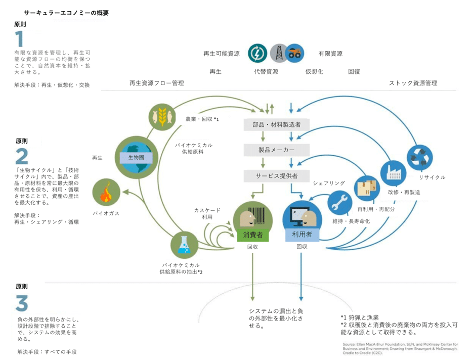

サーキュラーエコノミーとは
道用ゼミ初回はサーキュラーエコノミーについて学び、グループワークで考えていった。
サーキュラーエコノミー（循環経済）は、製品や資源を使い終わったら廃棄するのではなく、
リサイクルや再利用によって資源を循環させていくものとなる。
従来の廃棄するリニアエコノミーとは異なったものとなっている。
バタフライダイアグラム
サーキュラーエコノミーではバタフライダイアグラムというものがとても重要になり、
サーキュラーエコノミーを学んだなら必ず知っておかなければならい言葉だ。
バタフライダイアグラムは言葉の通り、循環の形を蝶の羽に見立てた表で、
左半分は生物的サイクル、右半分は技術的サイクルを表した表になっている。

外側のサイクルになるにつれて環境へ与える負荷が大きく、内側になるにつれて負荷が小さくなる
サーキュラーエコノミーは捨てるではなく戻して使うことが核になっていく。